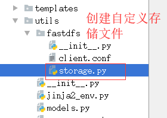

自定义Django文件存储类
思考：
- 下图首页页面中图片无法显示的原因。


结论：
- 通过FastDFS上传文件后返回的
'Remote file_id'字段是文件索引。- 文件索引会被我们存储到MySQL数据库 。所以将来读取出来的也是文件索引，导致界面无法下载到图片。
解决：
- 重写Django文件存储类的url()方法。
- 在重写时拼接完整的图片下载地址（协议、IP、端口、文件索引）
1. Django文件存储类url()方法介绍

结论：
- 文件存储类
url()方法的作用：返回name所代表的文件内容的URL。- 文件存储类
url()方法的触发：content.image.url
- 虽然表面上调用的是
ImageField的url方法。但是内部会去调用文件存储类的url()方法。- 文件存储类
url()方法的使用:
- 我们可以通过自定义Django文件存储类达到重写
url()方法的目的。- 自定义Django文件存储类必须提供
url()方法。- 返回name所指的文件对应的绝对URL。
2. 自定义Django文件存储类

class FastDFSStorage(Storage):
"""自定义文件存储系统"""
def _open(self, name, mode='rb'):
"""
用于打开文件
:param name: 要打开的文件的名字
:param mode: 打开文件方式
:return: None
"""
# 打开文件时使用的，此时不需要，而文档告诉说明必须实现，所以pass
pass
def _save(self, name, content):
"""
用于保存文件
:param name: 要保存的文件名字
:param content: 要保存的文件的内容
:return: None
"""
# 保存文件时使用的，此时不需要，而文档告诉说明必须实现，所以pass
pass
3. 重写Django文件存储类url()方法
1.重写
url()方法
class FastDFSStorage(Storage):
"""自定义文件存储系统，修改存储的方案"""
def __init__(self, fdfs_base_url=None):
"""
构造方法，可以不带参数，也可以携带参数
:param base_url: Storage的IP
"""
self.fdfs_base_url = fdfs_base_url or settings.FDFS_BASE_URL
def _open(self, name, mode='rb'):
......
def _save(self, name, content):
......
def url(self, name):
"""
返回name所指文件的绝对URL
:param name: 要读取文件的引用:group1/M00/00/00/wKhnnlxw_gmAcoWmAAEXU5wmjPs35.jpeg
:return: http://192.168.103.158:8888/group1/M00/00/00/wKhnnlxw_gmAcoWmAAEXU5wmjPs35.jpeg
"""
# return 'http://192.168.103.158:8888/' + name
# return 'http://image.meiduo.site:8888/' + name
return self.fdfs_base_url + name
2.相关配置参数
# 指定自定义的Django文件存储类
DEFAULT_FILE_STORAGE = 'utils.fastdfs.storage.FastDFSStorage'
# FastDFS相关参数
# FDFS_BASE_URL = 'http://192.168.103.158:8888/'
FDFS_BASE_URL = 'http://image.meiduo.site:8888/'
3.添加访问图片的域名
- 在
/etc/hosts中添加访问Storage的域名
$ Storage的IP 域名
$ 192.168.103.158 image.meiduo.site
4.文件存储类
url()方法的使用
- 以图片轮播图为例：
content.image.url
<ul class="slide">
{% for content in contents.index_lbt %}
<li><a href="{{ content.url }}"><img src="{{ content.image.url }}" alt="{{ content.title }}"></a></li>
{% endfor %}
</ul>